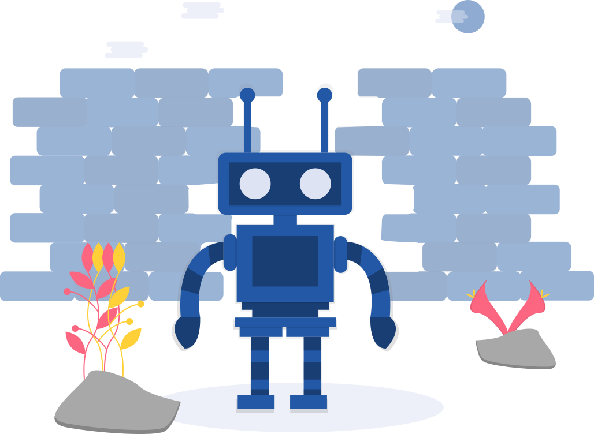

Potřebujete nápad na hodinu, srozumitelnější zadání nebo jiný způsob, jak vysvětlit učivo? Google Gemini je AI asistent, se kterým můžete své přípravy postupně promýšlet a upravovat. Napíšete mu, co právě řešíte, a on nabídne návrh, vysvětlení nebo několik možností, ze kterých si vyberete.
Nemusíte mu zadávat celou hodinu najednou. Často nejvíc pomůže s jedním konkrétním úkolem: vymyslet úvodní otázku, zkrátit text, připravit varianty cvičení nebo doladit instrukce pro žáky. Vy znáte svou třídu a rozhodujete, co z návrhů ve výuce využijete.

OTEVŘÍT GEMINI
1. Nápady a přípravy na hodiny
Gemini může navrhnout osnovu hodiny, aktivitu do dvojic, otázku k diskusi nebo propojení učiva s běžným životem. Hodí se i ve chvíli, kdy už přípravu máte, ale hledáte jiný začátek či závěrečnou reflexi.
„Navrhni tři krátké úvodní aktivity k tématu zlomky pro 5. třídu. Každá má trvat nejvýše pět minut a obejít se bez digitální techniky.“
2. Srozumitelnější vysvětlení učiva
Požádejte o jednodušší vysvětlení, přirovnání nebo konkrétní příklad. Můžete hledat také typické omyly žáků a otázky, kterými ověříte porozumění. Výklad pak upravíte podle toho, co už vaše třída zná.
„Vysvětli rozdíl mezi počasím a podnebím žákům 4. třídy. Použij příklad z běžného života a přidej dvě otázky, které ověří, že rozdílu rozumějí.“
3. Diferenciovaná výuka se společným cílem
Jedním promyšleným promptem může učitel získat návrh celé hodiny s různými cestami ke stejnému vzdělávacímu cíli. Gemini připraví společné zadání, opory pro žáky, kteří potřebují pomoc, i náročnější úkoly pro nadané žáky. Požadovaná úroveň cíle zůstává pro všechny stejná; mění se míra podpory a obtížnost rozšiřujících aktivit.
„Připrav 45minutovou hodinu matematiky pro 5. třídu. Společný cíl: každý žák znázorní zlomek jako část celku a vysvětlí význam čitatele a jmenovatele. Navrhni společný úvod, základní úkoly, variantu s názornou oporou a nápovědou a těžší rozšiřující zadání pro nadané žáky. Uveď časový plán, pomůcky, řešení a krátký závěrečný úkol, kterým u každého ověřím splnění společného cíle.“
Učitel návrh přizpůsobí své třídě a průběžně ověřuje, zda všichni dosahují požadované úrovně cíle. Rozšíření pro nadané má prohlubovat porozumění, ne pouze přidávat více stejných příkladů.
4. Procvičování, otázky a zpětná vazba
Gemini pomůže s návrhem pracovního listu, opakovacích otázek, krátkého kvízu nebo kritérií hodnocení. Můžete ho požádat také o kontrolu srozumitelnosti svého zadání či návrh slovního hodnocení podle vámi zadaných bodů.
„Připrav šest úloh na převody jednotek délky pro 6. třídu, od jednoduchých po náročnější. Řešení uveď zvlášť a přidej jeden příklad s vysvětleným postupem.“
Správnost otázek, výsledků a navržené zpětné vazby vždy projděte. Konkrétní hodnocení žáka zůstává na učiteli.
5. Texty, prezentace a školní komunikace
Využít ho můžete i mimo samotnou výuku: pro osnovu prezentace, pozvánku na školní akci, stručné instrukce nebo návrh e-mailu. Stačí zadat podstatné informace, komu je text určený a jak má působit.
„Z těchto bodů sestav stručný a přátelský e-mail rodičům o plánované exkurzi. Nevyplněné údaje označ hranatými závorkami, nic si nedomýšlej.“
6. Práce s vlastními podklady
Do chatu můžete vložit text nebo přiložit podporovaný soubor, například PDF či obrázek, pokud je tato možnost na vašem účtu dostupná. Gemini pak může vytvořit shrnutí, vyhledat podstatné body nebo navrhnout otázky k dodanému materiálu.
„Z přiloženého materiálu vyber pět hlavních myšlenek a vytvoř otázky pro práci ve dvojicích. Vycházej pouze z tohoto podkladu. Pokud něco není uvedeno, řekni to.“
Gemini automaticky nevidí všechny vaše soubory. Práce s Diskem a dalšími aplikacemi závisí na připojení služeb, oprávněních a nastavení školního účtu.
Jak napsat zadání, které opravdu pomůže?
Gemini nepotřebuje odborné příkazy. Pomůže mu ale konkrétní kontext:
- Pro koho: ročník, předmět a dosavadní znalosti žáků.
- S jakým cílem: co mají žáci na konci umět nebo pochopit.
- Za jakých podmínek: čas, pomůcky a způsob práce.
- V jaké podobě: osnova, seznam otázek, tabulka nebo pracovní list se samostatným řešením.
První odpověď berte jako návrh. Pokračujte ve stejném chatu třeba pokyny: „Zkrať to na deset minut.“ „Přidej pohybovou aktivitu.“ „Zadání napiš přímo pro žáky.“ „U druhého úkolu nabídni nápovědu.“
Právě postupným doplňováním a upravováním zadání bývá Gemini nejužitečnější.